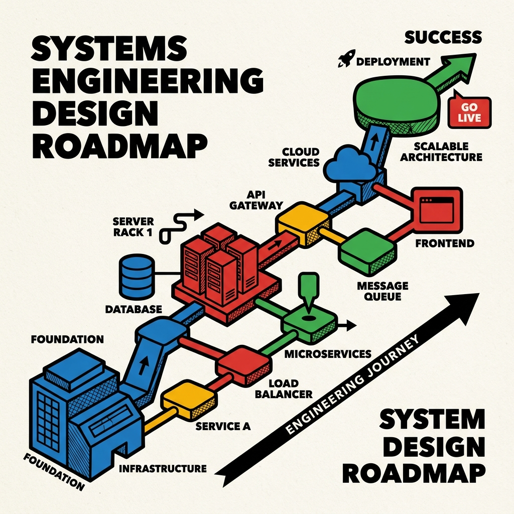

Master System Design.
A comprehensive guide from foundational concepts to advanced distributed systems architecture, accelerated by AI.

Beyond the Code.
"System design is not about memorizing solutions. It's about understanding trade-offs, thinking at scale, and designing systems that survive reality."
The 12-Month Journey
Core Concepts & Architecture
Monoliths vs microservices, CAP theorem, API basics, and essential design frameworks.
- URL Shortener (theoretical)
- Basic cache layer implementation
Advanced Scalability Patterns
Event-driven processing, rate limiting, CQRS, and service discovery.
- Distributed cache system
- Real-time chat app
Large Systems & Specializations
Multi-region deployments, advanced transactions, and company-specific studies.
- Scalable crawler/search engine
- Video streaming backend
FAANG Interview Preparation
Deep dives, mock interviews, and mastering communication and trade-offs.
Language Progression Strategy
Python
Phase 1: Rapid prototyping, scripting, data processing, and API design validation.
C++
Phase 2+: Shift to C++ for performance-critical components. Systems programming, memory management, and high-concurrency.
Phase 4 Expansion: Java / Rust / Go
Implement projects in secondary languages to understand language-specific patterns (Enterprise scalability, Memory safety, Cloud-native microservices).
Implementation Projects
Distributed Cache (Mini Redis)
LRU/LFU eviction, TTL, persistence, replication. Tests data structures, concurrency, memory management.
URL Shortener
Encoding, collision handling, analytics, redirect optimization. Tests DB design and caching.
Real-Time Chat
WebSocket handling, message ordering, presence. Scaling to 100M concurrent users.
Search Engine
Crawling strategy, inverted index, ranking, distributed indexing. Handling 1B+ documents.
Stock Trading Platform
Order matching engine, risk management, low-latency execution (<1ms).
FAANG Focus Areas
What big tech actually tests during a system design interview.
-
1. Requirement Clarification (30%)
Scale assumptions, SLA, cost vs performance. -
2. High-Level Architecture (40%)
Component selection, data flow, bottlenecks. -
3. Deep Dives (20%)
DB schemas, caching strategies, load balancing. -
4. Communication (10%)
Justify decisions, acknowledge trade-offs upfront.
Core Technologies
Databases
- Relational: PostgreSQL, MySQL
- NoSQL: MongoDB, Cassandra
- In-Memory: Redis, Memcached
- Search: Elasticsearch
Messaging & Streaming
- RabbitMQ
- Apache Kafka
- AWS SQS
- Apache Flink
Infra & DevOps
- Docker, Kubernetes
- AWS, GCP, Azure
- Terraform
- Prometheus, Grafana
AI-Assisted Learning Strategy
Resources
Grokking System Design
Educative.io premium course.
Designing Data-Intensive Apps
By Martin Kleppmann. The definitive guide.
System Design Interview
By Alex Xu. ByteByteGo framework.